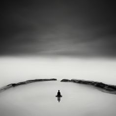

« Le Yoga est l'installation de l'esprit dans le silence » Patanjali

Etre en état de Yoga.
Le yoga est une discipline, qui demande un engagement à soi-même.
Le Yoga s'est s'expérimenter :
une pratique régulière permet de trouver une fluidité dans son corps, être
mieux dans sa tête ; prendre de la distance avec ses émotions ;
accueillir ses limites, pouvoir s'en affranchir, s'accepter
inconditionnellement.
S'accueillir en son être, chercher l'équilibre subtil des oppositions afin
d'être en paix, trouver la Sérénité et la Joie.
C'est accepter d'être attentif à soi, d'être en accord et en intelligence,
mettre de la compréhension ; trouver du sens.
Le yoga c'est s'unir. Le Yoga est l'étude : Des postures « Asanas », de la
respiration « Pranayama », de la méditation « Dhyana » pour être dans un
équilibre qui unifie le corps et l'esprit, pour lever les voiles de
l'ignorance et atteindre la libération « Moksha ». On entend par
libération : celle des schémas conditionnés, des vues erronées, des
croyances limitantes, des idéaux. Sur le tapis :
On s'accueille avec joie !
C'est un moment pour soi, avec soi, unique. On développe la conscience de la
structure, de l'architecture intérieur qui s'édifie en inter-relation avec
le corps – la respiration- la conscience.
La vigilance d'être à l'instanté,
au moment présent, en vie.
Sur le tapis c'est aussi être en correction de notre posture, de notre
proprioception. S'ajuster avec écologie pour le corps, celui qu'on a, celui
qui est.
Ajuster notre regard intérieur.
Mettre en mouvement ce corps qui se meut, cette respiration qui se diffuse,
s'établir avec joie dans cet équilibre subtil impermanent.... Accepter le
changement, et s'abandonner dans le calme, être Témoin, Observateur.
Ressentir l'énergie qui coule, qui rempli l'édifice de la matière, qui
rempli l'océan des vagues de respiration ; cette conscience qui orchestre
l'unicité de notre être, transcendant le microcosme au macrocosme.
« Il n'existe rien de constant si ce n'est le changement » Bouddha